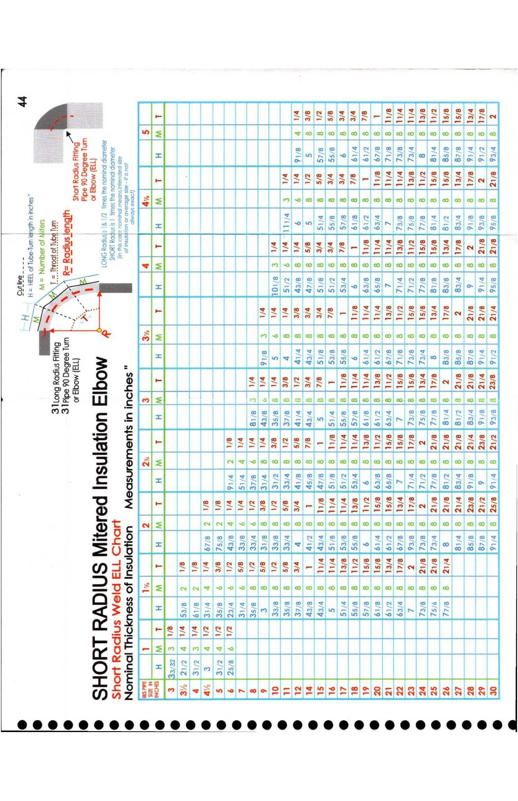

44. Short Radius Miter Chart

assess
y | I-L ||| || TTT | bisis\sisisie\-[sissisisisisi3isi
2 is a jejel_lsisieleiels|_ |s/elelsials!
ze 5o =|) S| a) o) =] =) |S] 8) 8) 0) =| o| | S| |
fa ibs & 5B) S/S SRL PM alalalaiale
Bese
g aaslelalelelsiel le
dye (TTT TTT Biss aisle assiasisnls
; gee est
e BB etfalel TTT TT Polelelelalelelalelale|ele|<[q|=|e\=
8 :
e *a5
a eet td] = sjeieisisis| leieieisiaisisisis
$2861 Sees | =|*}"| 5/815) s|s/S| "|| e|klalalSiaisie
: 8, — 3885
goes ges a eleleieleizie|_|eisizieisigieis gis
gies oSs° Cl bel kel al ol od A SSS eS aa
iB e Bat .” [|
i SEu 2 delet TTT TTT [ofelelele|e|a|a|a)a/a]o]o|e]=)/0|0/0|=/2|
BEY SRERERERPERERRERRRER
a: 2?<oee 85] 3 3] 5] 513) | 3 3|"|K|<| 8] a [8] 8/52
ot
ea gzisesseossssysgsisissz
a) ae: = |= [Fela [eo (= |"]=]=|=|2]=|2]4]2/8|“lalala
“ i z
g lel | | | | | | | [ele|e|e|=|=|=[=[=[=[=[=[=[=[2]2] |=] 2] 0] 0
2
23 al isisieelel_isislelelelsicieleieisis
5 bg >. a[°|s| =|] 5]3/3]-|5]3|3]</e]e|°|8 8 a|e|5
és 8 sieizieleisie/_|/S SSS Ssisisisal/s sss
4 £ elKlK|a\—|\a\n Led Ream Roce eae Roel Reouedl Renal Read fame NNN N
=
SEs Dp Sloe CET tolclelelalalalalalalalela|alalalo|a|o|alala1
oo Ee ff aislelels/<| |siaisieiaiz) |eieie/<iai/sieie
o 2 © 3/3) 5/ 3/9/75) B/S SoS RR Rola aos
%S | t+ | || | lslsis[slslsisiel-Sissssisisisioisisisisias
S Blas [1 | ll[lelele|=|ala|e/e\e\<\=|=||=/-|0/=|=]2\=|=]
a §
sielsieisfelelelelels/_lelel_leisfelsisle) fz
ae] BG BEEBE EEE GEREESEERBEBEE
B >| |-| | | kslsissis\sisis[s|-S3 2555558858515
o |_| |s|s|=/ | <]2|2]2]2|2|2|2|2|2|2|0|2|0|0|2|0| 0/0] =| 2/0)
Otc ils
= 26 ele)eie/s/eiel=|_[ajsiejelel |<i/s/elele/<| |</ele/=
Sos 38/8/38] 8) 5/3/3)s| 5] 8)5/ 3/8) °/ 5) s/S/8/eieiela/3 se
dz! |-| [slslsisis(slesisisis|-SS 5855548518 | | | |
nz SEEEERES
205 |2]s| |/n-|-|4|-|ela/ola/ela/eleleleleleleelelelele | | | |
Og <lalalelsigial talatalelsl-aistaletelsl telsle
z0 SIS SS SS Felais|slsiaiol sisi slciciainialsls
& 9 | 0) 9) 9) N09) 9) 09) 8 TS 0) 0) 0) Oo Ld Lt a
a
39) [Helzlsilsls| || IIIT TTT TT TT
be BE [olalelelaetels
wy o&\-lstelellelelel [TTT TTT TTT TTT TTT TT TT TT
sade ala|si_isje
Ose 8.4) 5)? a8
g22 eS s
HZ lah? Pm siei<n
(RE RERERERERRERERRARRRARRRERAE EEE)